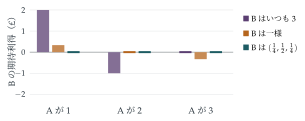

STEP I 1989、第16問
先に進む前に問題を読んでおこう。問題は STEP Support Programme の問題データベースにある： step.maths.org/questions/89-s1-q16
導入
じゃんけん（rock–paper–scissors）では、決まった手を出し続けると必ずつけ込まれる。毎回グーを出していれば、相手はやがてパーを出すことを覚えるだろう。安全な戦略はただ一つ、手をランダムに選ぶことである。この問題はその込み入った版であり、利得が均等ではなく、どのようにランダムに選べばよいかは自明ではない。実は、\(1\), \(2\), \(3\) をそれぞれ確率 \(\frac14\), \(\frac12\), \(\frac14\) で言うことにすれば、相手がどうしようとも、長い目で見て負けないことを保証できるのである。
これは、1928年のジョン・フォン・ノイマン（John von Neumann）によるミニマックス定理（minimax theorem）を初めて垣間見る例である。この定理はゲーム理論（game theory）の礎となった結果であり、一方の利得が他方の損失となるあらゆる二人ゲームにおいて、各プレイヤーには、完璧にプレイする相手に対して可能な限り最良の結果を保証するランダム化された戦略が存在する、と主張する。
取りかかる前に
二人の言う数の各組について、B の獲得額の表を書いてみよ（B の数を縦に、A の数を横に並べる）。
規則を一つずつ当てはめていくと（たとえば B が \(1\)、A が \(3\) と言えば、差は \(2\) であり、小さい方の B が £2 を支払う）、次の表が得られる。
| B \(\backslash\) A | \(1\) | \(2\) | \(3\) |
|---|---|---|---|
| \(1\) | \(0\) | \(+1\) | \(-2\) |
| \(2\) | \(-1\) | \(0\) | \(+1\) |
| \(3\) | \(+2\) | \(-1\) | \(0\) |
この表は交代的（antisymmetric）である（プレイヤーを入れ替えると符号が変わる）。したがって、どちらのプレイヤーにも生まれつきの有利さはないという意味で、このゲームは公平である。
順を追って解く
段階 1 決まった数に対して
A がいつも \(1\) と言うなら、B は \(3\) と言えば毎回 £2 を得る。A がいつも \(2\) と言うなら、B は \(1\) と言って £1 を得る。A がいつも \(3\) と言うなら、B は \(2\) と言って £1 を得る。どんな決まった数もつけ込まれてしまう。
段階 2 一様にランダムな選択に対して
A が一様にランダムに数を選ぶとき、B が \(j\) と言った場合の B の期待利得（expected winnings）はいくらか。（表の第 \(j\) 行の平均をとればよい。）
各行の平均は、\(j = 1\) のとき \(\frac13(0 + 1 - 2) = -\frac13\)、\(j = 2\) のとき \(0\)、\(j = 3\) のとき \(\frac13(2 - 1 + 0) = \frac13\) である。よって、1回あたりの B の期待利得は \[-\tfrac13b_1 + 0\cdot b_2 + \tfrac13b_3,\] であり、これは \(b_3 = 1\) のとき最大となる。すなわち、いつも \(3\) と言えば、1回あたり平均で \(\frac13\) ポンドを得る。一様なランダム化では A は身を守れない。
段階 3 一般の場合
今度は A が確率 \(a_j\) で \(j\) を言うとする。B の期待利得を A の数ごとにまとめよ。\(a_1\) の係数（第 \(1\) 列の重み \(b_j\) による平均）は何か。
表を列に沿って読むと、 \[\text{B の期待利得} = (-b_2 + 2b_3)a_1 + (b_1 - b_3)a_2 + (-2b_1 + b_2)a_3,\] となるので、\(X = -b_2 + 2b_3\), \(Y = b_1 - b_3\), \(Z = -2b_1 + b_2\) である。
三つすべてを \(0\) にできるか。（方程式は三つあるが、独立ではない。なぜか。）
これらは独立ではない。恒等的に \(X + 2Y + Z = 0\) が成り立つからである（確かめてみよ）。したがって、\(Y = 0\) から \(b_1 = b_3\)、\(X = 0\) から \(b_2 = 2b_3\) が得られれば、自動的に \(Z = 0\) も成り立つ。\(b_1 + b_2 + b_3 = 1\) と合わせて \[b_1 = \tfrac14, \qquad b_2 = \tfrac12, \qquad b_3 = \tfrac14,\] を得て、\(X = Y = Z = 0\) となる。このとき、\(a_j\) が何であっても B の期待利得は \(0\) であり、B は長い目で見て何も失わない。■

振り返り
利得表（payoff table）を書く。 推論はすべて \(3 \times 3\) 行列の行と列についてのものであった。
純粋戦略（pure strategy）はつけ込まれる。 どんな決まった数に対しても、さらには一様な選択に対してさえ、相手には得をする応じ方がある。
均等にする。 安全な戦略とは、相手にとってどの選択も無差別になるようにするものである。すなわち、A のどの選択も同じ期待値を与える。
背後にある数学
ミニマックス定理
利得行列（payoff matrix）\(M\) で与えられる二人ゼロ和（zero-sum）ゲームにおいて、B が確率 \(\mathbf{b}\) を、A が確率 \(\mathbf{a}\) を選ぶとき、B の期待利得は \(\mathbf{b}^{\mathsf T}M\mathbf{a}\) である。フォン・ノイマンのミニマックス定理は \[\max_{\mathbf b}\min_{\mathbf a}\mathbf{b}^{\mathsf T}M\mathbf{a} = \min_{\mathbf a}\max_{\mathbf b}\mathbf{b}^{\mathsf T}M\mathbf{a}.\] が成り立つことを主張する。言葉で言えば、B がランダム化された戦略を前もって宣言することで保証できる額は、A が自分の戦略を宣言することで B を抑え込める額に等しい。この共通の値をゲームの値（value）という。ここでは交代性から値は \(0\) であり、戦略 \((\frac14, \frac12, \frac14)\) は両プレイヤーにとって最適である。この定理は線形代数と凸性（convexity）を用いて証明される（線形計画法（linear programming）の双対定理（duality theorem）と同値である）。また、その多人数への一般化であるナッシュ均衡（Nash equilibrium）により、ジョン・ナッシュ（John Nash）はノーベル経済学賞を受賞した。
なぜランダムにするのか
ここでのランダム性は運の問題ではなく、情報の問題である。B の選択が予測できれば、A はそれにつけ込める。適切な確率でランダムに選ぶことで、B は自分の選択を予測不能にするとともに、どんな予測も役に立たないようにするのである。実例としては、サッカーのペナルティーキックがある。プロ選手の研究では、キッカーもゴールキーパーも左右をランダムに選んでおり、その比率はゲーム理論上の最適値に近いことがわかっている。テニスのサーブも同様の例である。
ジョン・フォン・ノイマンは1928年、論文「On the theory of games of strategy」（戦略ゲームの理論について）においてミニマックス定理を証明した。動機となったのはポーカーであり、そこではブラフがランダム化の一形態となっている。1944年、彼は経済学者オスカー・モルゲンシュテルン（Oskar Morgenstern）とともに Theory of Games and Economic Behavior（『ゲームの理論と経済行動』）を出版し、ゲーム理論を一つの学問分野として確立した。フォン・ノイマンは後年、ミニマックス定理こそが鍵となる結果であり、それなしには出版に値するゲーム理論は存在しえなかったと考えていた、と回想している。
思考のスキル
どんな決まった選択もつけ込まれるときは、相手にとってどの選択肢も無差別になるような確率で、ランダムに選べ。
大学では、ゲーム理論、線形計画法、アルゴリズムの理論のいずれもがこの考え方を用いる。たとえば乱択アルゴリズム（randomised algorithm）は、どんな敵対者も予測できないランダムな選択を行うことで、最悪の入力から身を守っている。
次の一歩
A の最適な応じ方。 B が \((\frac14, \frac12, \frac14)\) を用いるとき、A のどの戦略も期待利得 \(0\) を与えることを示せ。また、B が代わりに \((\frac13, \frac13, \frac13)\) を用いるとき、A の最適な応じ方を求めよ。
じゃんけん。 じゃんけんの利得行列を書き、最適戦略を求めよ。ここでは一様になるのに、問題ではそうならないのはなぜか。
一意性。 負けないことを保証する B の戦略は \((\frac14, \frac12, \frac14)\) ただ一つであることを示せ。（ヒント：その戦略は \(X\), \(Y\), \(Z\) をすべて非負にしなければならない。\(X + 2Y + Z = 0\) を用いよ。）
修正されたゲーム。 差が \(2\) のときの支払いが £2 ではなく £3 であるとき、最適戦略を求めよ。
さらに学ぶために
Ken Binmore, Playing for Real (Oxford University Press)。ゲーム理論への、本格的でありながら親しみやすい入門書。
Avinash Dixit & Barry Nalebuff, The Art of Strategy (Norton)。スポーツやビジネスの例を用いたゲーム理論の本。
William Poundstone, Prisoner’s Dilemma (Anchor)。フォン・ノイマン、ゲーム理論、そして冷戦。